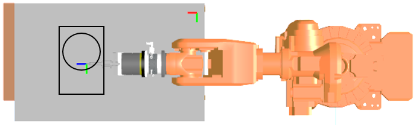

Travaux pratiques — programmation
Premier contact avec la programmation d'un robot industriel ABB. On y apprend à définir ses propres repères — outil et objet —, on compare les deux grandes familles de mouvement, on va voir ce qui se passe dans une singularité, puis on programme un motif que l'on fait répéter ailleurs dans l'espace par un simple changement de repère.
Les TP se font par groupe de 2 à 4 étudiants : la manipulation d'un robot ne se réalise jamais seul.
Avant de commencer : La partie sécurité doit être validée avant de débuter la prise en main du robot.
Le code doit être validé par l'enseignant avant toute exécution du programme sur la machine.
Le manuel de programmation ABB et le tutoriel PEL sont distribués en séance.
On cherchera dans ce TP à étudier les trajectoires afin de réaliser un motif, et de répéter ces trajectoires avec des positions et orientations différentes.
Les référentiels robot sont le Tool0 pour le repère de la bride du robot, et le Wobj0 pour le repère de base du robot.
Wobj0 — Repère de base, au pied du robot. C'est la référence par défaut de toutes les positions tant qu'aucun repère objet n'est déclaré.
Tool0 — Repère outil par défaut, sur la face de la bride. Déclarer un outil revient à décaler ce repère jusqu'à la pointe réelle de l'outil.
Piloter le robot manuellement en mode articulaire et cartésien, afin de prendre connaissance des différents axes du robot. En mode cartésien, le robot peut être piloté suivant différents référentiels (world, base, outil, objet). Dans un premier temps, vous déplacerez le robot suivant les référentiels base (Wobj0) et outil (Tool0).
Cf Tutoriel PEL
Quel est l'intérêt de pouvoir déplacer le robot dans différents référentiels ?
Créer un nouvel outil et définir les valeurs de position et d'orientation par apprentissage. Pour cela vous viendrez mettre en contact la pointe de l'outil sur un comparateur, qui servira de référence.
L'opération sera répétée 4 fois, en prenant soin de toujours venir sur la même valeur du comparateur et avec des orientations différentes de l'outil. Des incréments pourront être utilisés afin de venir en contact précisément sur le comparateur.
Cf Tutoriel PEL — 3.1 Le repère outil
Représenter graphiquement le vecteur outil et en donner les valeurs numériques (position et rotation).
Créer un nouveau repère objet et définir les valeurs de position et d'orientation par apprentissage. Pour cela vous viendrez apprendre 3 points :
Le repère étant orthonormé, l'axe z sera créé automatiquement en fonction des axes x et y définis.
Cf Tutoriel PEL — 3.2 Le repère pièce
Valider la définition de ce nouveau repère en vous déplaçant manuellement en mode cartésien dans ce référentiel objet.
Créer un programme dans le dossier de votre groupe.
Cf Tutoriel PEL — 3.3.3 Créer une nouvelle routine
Puis saisir les différentes instructions du programme, qui correspondent aux mouvements et positions permettant de réaliser une ligne. Pour cela vous déplacerez le robot aux positions souhaitées manuellement et enregistrerez au fur et à mesure les différentes instructions.
Cf Tutoriel PEL — 3.3.4 Créer une nouvelle instruction
Le programme sera exécuté en présence de l'enseignant.
Expliquer les différences de mouvements entre MoveL et MoveJ.
Modifier les points de la trajectoire afin de passer par une singularité du robot.
Qu'observez-vous au passage de la singularité ?
Créer une nouvelle routine et saisir les instructions afin d'exécuter les motifs représentés.

On définira :
Chaque cible est définie dans le programme par un astérisque. Les valeurs définies sont différentes d'une ligne à l'autre.
PROC Motif()
MoveL *, v1000, z50, tool1\WObj:= Wobj1 ;
MoveL *, v100, z50, tool1\WObj:= Wobj1 ;
…
MoveAbsJ *, v1000, z50, tool0\WObj:= Wobj1 ;
ENDPROCQuel paramètre permet d'obtenir des angles droits ?
Ce motif doit être répété plusieurs fois avec des positions et orientations différentes. Un nouveau repère va être créé à partir de l'apprentissage de 3 points. Une prise en compte de ce nouveau repère sera réalisée dans le programme afin d'exécuter de nouveau le programme.
MODULE Module1()
CONST robtarget p10:=[[…]];
CONST robtarget p20:=[[…]];
CONST robtarget p30:=[[…]];
VAR pose DEC1;
PROC Main()
Motif;
DEC1:=DefFrame(p10,p20,p30);
! Activation du deplacement defini par DEC1
PDispSet DEC1;
Motif;
PDispOff ;
ENDPROC
ENDMODULELes questions posées au fil du TP, dans l'ordre :